TV kumandası için yapılmış IPTV oynatıcı.
Canlı TV, tam program rehberi, spor rehberi, film ve dizi. Telefondan giriş yap.
Yakında Google Play'de
Izlio bir oynatıcıdır. Kanalı yoktur. Kendi sağlayıcı hesabını (Xtream Codes) ya da kendi M3U listeni (bağlantı veya dosya) kendin eklersin.
Android TV ve Google TV için
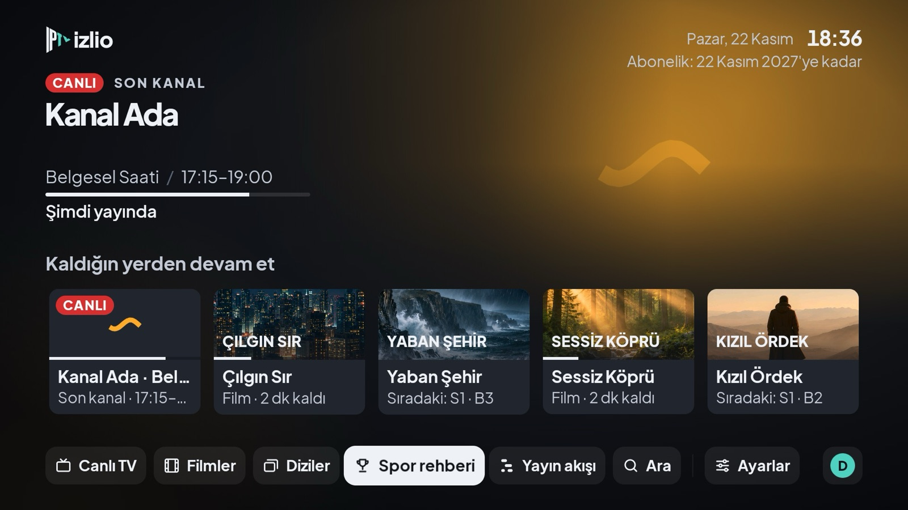
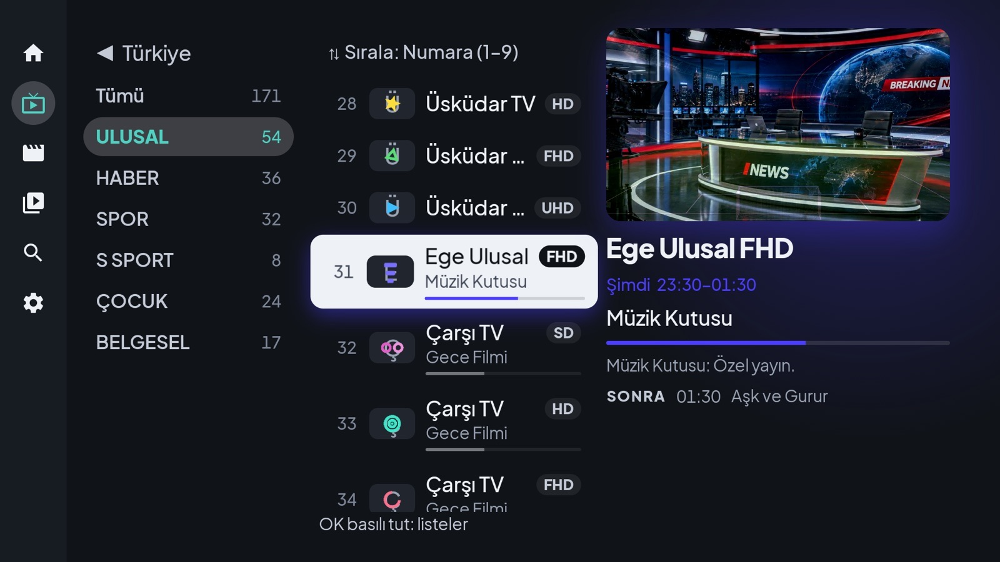
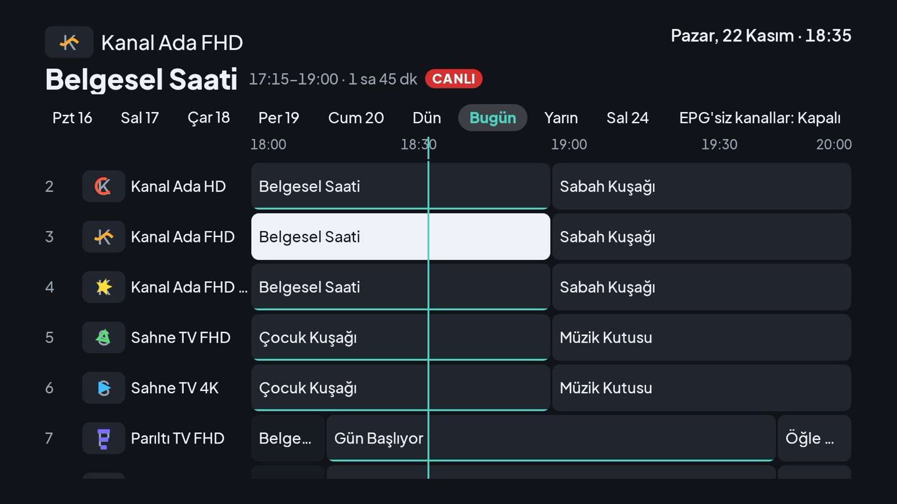
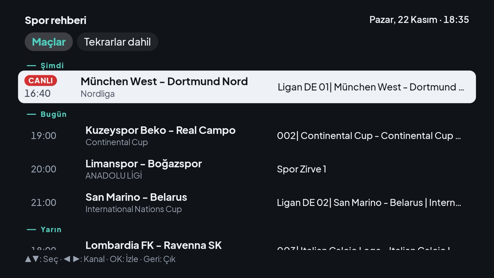
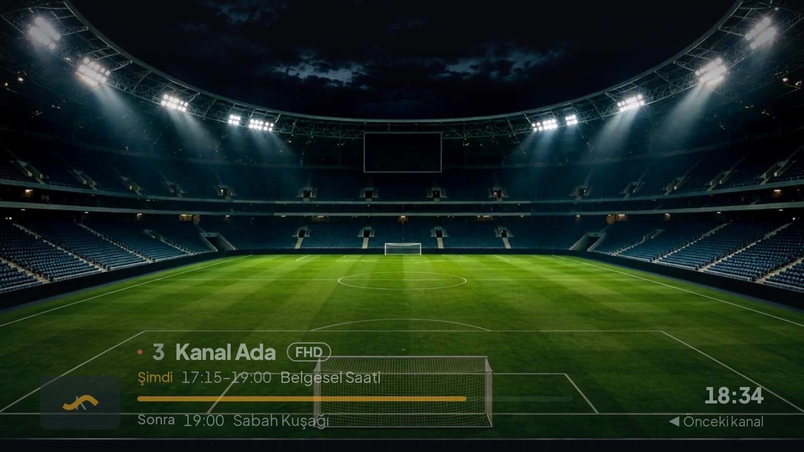
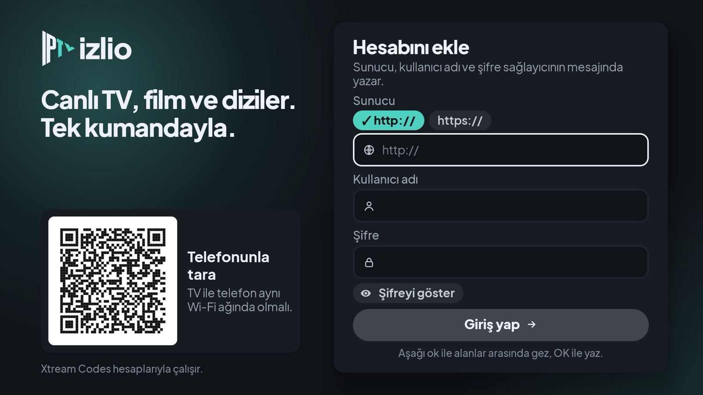
Kaldığın yerden devam et: en son izlediğin film, bölüm ve kanallar.
Ülke ve kategori listesi, kanal listesi ve şimdiki ve sonraki programı gösteren canlı önizleme.
Gün sekmeli rehber ızgarası. Canlı, başından ya da sağlayıcının arşivi varsa arşivden izle.
Spor kanallarındaki maçlar ve etkinlikler; Şimdi, Bugün, Yarın ve Sonra olarak gruplanır.
Tam ekran. Yukarı ve Aşağı kanal değiştirir, Sol önceki kanala gider.
TV bir QR kod gösterir. Girişi telefonunda yaz ve gönder.
Yetişen canlı TV
Solda ülkeyi ve kategoriyi seç. Ortada kanal listesi durur. Sağda canlı önizleme, şimdiki ve sonraki programı gösterir.
Oynatıcıda Yukarı ve Aşağı kanal değiştirir, Sol önceki kanala gider. Hızlı menüde ses, altyazı, görüntü ve harici oynatıcı var. Kopan yayın kendini yeniden bağlar.
Her program. Her maç.
Rehber ızgarası her programı günü günü gösterir. Bir programı canlı ya da başından izlemek için aç. Geçmiş programları, sağlayıcının arşivi varsa "Arşivde" ile sonradan izle. Sonraki bir program için Hatırlat'ı seç. Uygulama 1 dakika önce ve başlangıçta ekranda uyarı gösterir.
Spor rehberi, spor kanallarının rehber verisindeki maçları ve etkinlikleri toplar. Liste Şimdi, Bugün, Yarın ve Sonra olarak gruplanır. Filtre yalnız canlı maçları ya da tekrarları da gösterir. Aynı etkinliğin başka kanalını seçmek için Sol veya Sağ'a bas.
Girişi TV'de değil telefonda yaz
- TV bir QR kod gösterir.
- Kodu tara ve girişi telefonunda yaz.
- Gönder. TV giriş yapar.
Telefonun ve TV'nin aynı Wi-Fi'da olmalı. Giriş şifreli olarak doğrudan TV'ye gider. İnternetten veya bizden geçmez. Kumandayla TV'de yazmak da çalışır.
Film ve dizi, kaldığın yerden
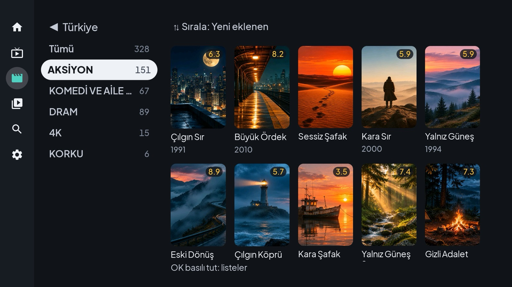
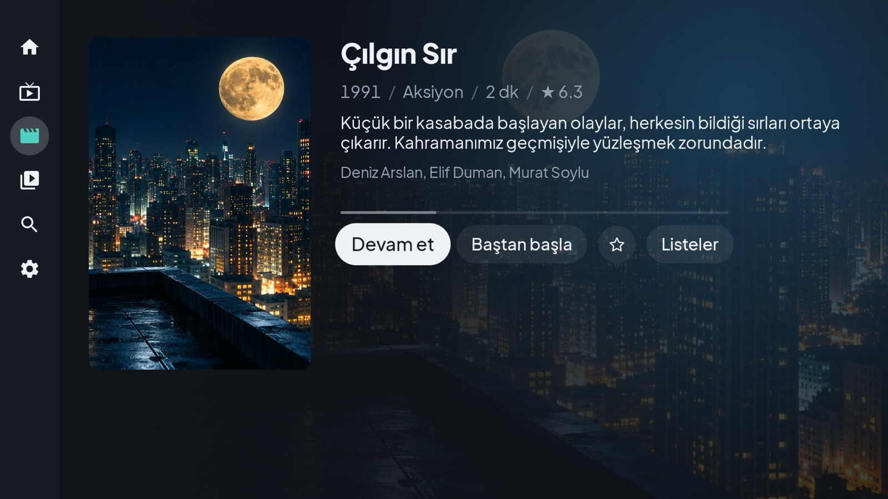
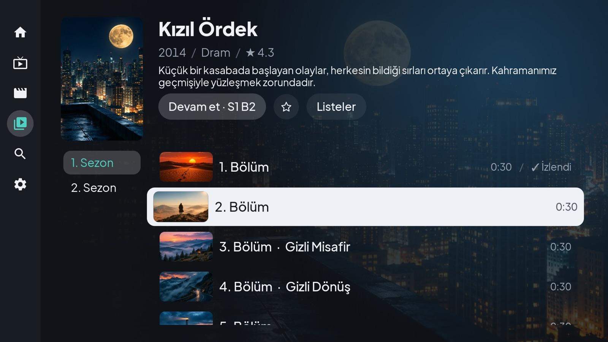
Kendine göre ayarla
Aynı anda iki altyazı
Film ve dizilerde birinci ve ikinci altyazı seç. Örneğin özgün dil ve senin dilin. Her birinin kendi rengi olur. Boyutu, rengini, arka planını ve yazı tipini, ayrıca tercih ettiğin ses dilini de ayarlarsın.
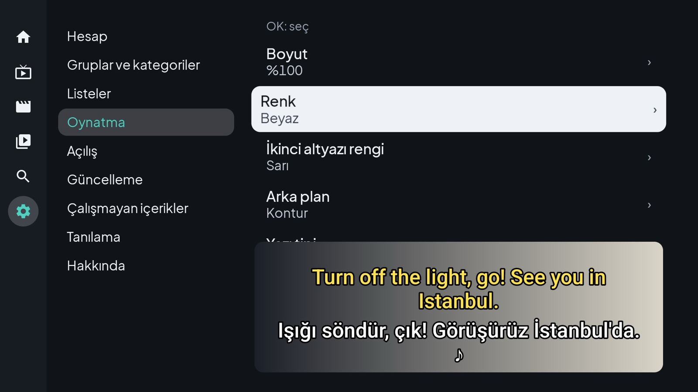
Yalnız izlediğini göster
Başlangıçta bütün ülkeler ve gruplar açıktır. İzlemediklerini Ayarlar > Gruplar ve kategoriler'de gizle. Tek tek kategorileri de gizleyebilirsin. Açılmayan bir kanal 24 saat gizlenir.
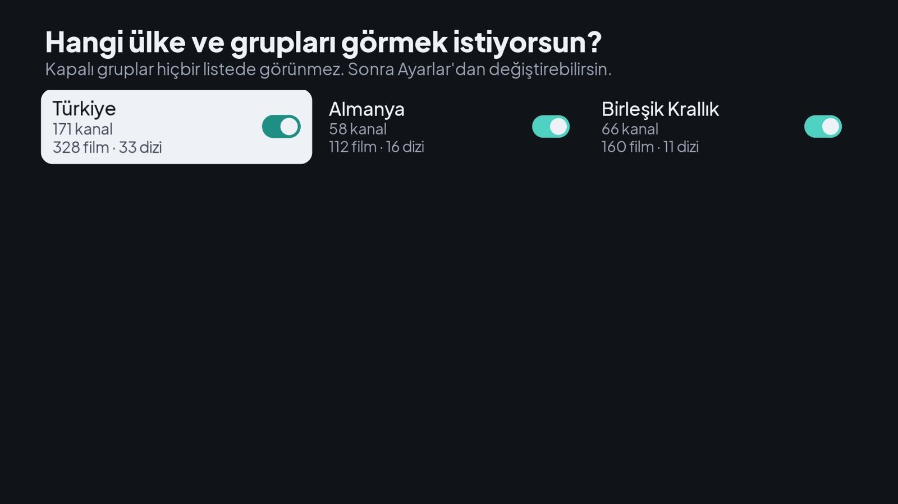
Ve daha fazlası
- Xtream Codes ve M3U
- Bir Xtream Codes hesabı, bir M3U bağlantısı veya bir M3U dosyası ekle. Uygulama listendeki kanalları, filmleri ve dizileri okur.
- Kaldığın yerden devam
- Uygulama son ekranda, sekmede, kategoride ve kanalda açılır. Film ve diziler kayıtlı konumdan devam eder.
- Bağlantı testi
- Ayarlar > Tanılama, interneti, sağlayıcı adresini, girişi, kanal listesini, rehberi ve bir yayını kontrol eder.
- Kumanda için yapıldı
- Büyük yazı, net odak, dokunmatik gerekmez.
- Kendi listelerin
- Favoriler ve kanal, film, dizi listeleri.
- Arama
- Birkaç harf yaz. Film, dizi ve kanal sonuçlarını görürsün.
- İki dil
- Uygulama Türkçe ve İngilizce.
Verin sende kalır
Uygulama bize hiç veri göndermez. Bizimle hesap açman gerekmez. Telefon girişi senin Wi-Fi'ında kalır. Gizlilik politikasını oku.
Yakında Google Play'de
Soru mu var? Destek sayfasına bak.